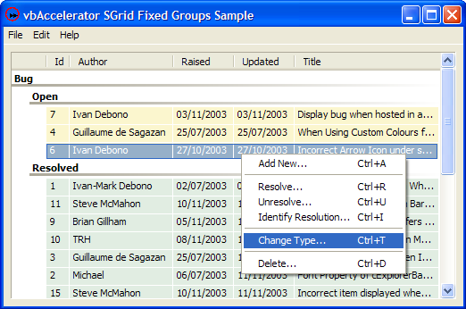

VB5 Fixed Grouping Sample (64K)
VB5 Fixed Grouping Sample (64K)
 VB6 Fixed Grouping Sample (62K)
VB6 Fixed Grouping Sample (62K)
 24 Jan 2004
24 Jan 2004
First Posted

Creating ListView Style Groups with SGrid 2
This sample demonstrates how to use owner-draw to customise the appearance of grouping rows, and to ensure that they remain open in the style of the Windows XP ListView in grouped mode. It also demonstrates adding new rows to a grouped grid and moving them to the correct position given the current sorting and grouping options.
Groupings in SGrid 2.0
Although the groupings feature in SGrid 2.0 is provided internally, you can still customise the appearance and behaviour of the groups. This demo shows how to customise the view by performing the following tasks:
- Configuring the grid to allow for code-only grouping without a drag-drop area
- Owner-drawing grouping rows.
- Preventing rows from collapsing when the user performs an action that would normally cause this to occur.
- Ensuring all rows are expanded.
These will now be covered in detail.
1. Configuring the Grid for Code-Only Grouping
Rows can be grouped in the grid when the AllowGrouping property is set to True. However, by default a grouping area for drag-drop of the columns will appear. You can clear this by using the HideGroupingBox property. Setting HideGroupingBox before setting AllowGrouping will be smoother than doing it the other way around:
grd.HideGroupingBox = True grd.AllowGrouping = True
2. Owner-Drawing Grouping Rows
Grouping rows are drawn using an internally customised version of SGrid's RowTextColumn functionality. This means that the cell which contains the group row information is the RowTextColumm column (the last column) in the row, and you can owner-draw over it in the same way you can owner-draw any other cell.
To owner-drawing cells, you to implement the IOwnerDrawGridCell interface. In this case, we only want to draw grouping rows, and hence the basic code is as follows:
Implements IGridCellOwnerDraw
Private Sub configureGrid(grd As vbalSGrid)
grd.OwnerDrawImpl = Me
End Sub
Private Sub IGridCellOwnerDraw_Draw( _
cell As cGridCell, _
ByVal lHDC As Long, _
ByVal eDrawStage As ECGDrawStage, _
ByVal lLeft As Long, ByVal lTop As Long, _
ByVal lRight As Long, ByVal lBottom As Long, _
bSkipDefault As Boolean)
'
If (eDrawStage = ecgBeforeIconAndText) Then
If m_grd.RowIsGroup(cell.Row) Then
drawGroupRow cell, lHDC, lLeft, lTop, lRight, lBottom
bSkipDefault = True
End If
End If
'
End Sub
To look like a grouped ListView, the cell should contain the text of the grouped set in bold with a gradient underline below it. When SGrid 2.0 groups rows, it places the text and/or icon of the items that have been grouped into the Text of the RowTextColumn cell (note the default drawing writes the column name first followed by this text/icon, but the column name is added dynamically and not stored in the text property). Hence drawing the group row is pretty simple:
Private Sub drawGroupRow( _
cell As cGridCell, _
ByVal lHDC As Long, _
ByVal lLeft As Long, _
ByVal lTop As Long, _
ByVal lRight As Long, _
ByVal lBottom As Long _
)
Dim hFont As Long
Dim hFontOld As Long
Dim tR As RECT
Dim tBR As RECT
tR.left = lLeft
tR.top = lTop
tR.right = lRight
tR.bottom = lBottom
LSet tBR = tR
tBR.top = tBR.bottom - 5
tBR.bottom = tBR.bottom - 2
If (cell.Selected) Then
GradientFillRect lHDC, tBR, _
vbHighlight, vbWindowBackground, GRADIENT_FILL_RECT_H
Else
GradientFillRect lHDC, tBR, _
vbButtonShadow, vbWindowBackground, GRADIENT_FILL_RECT_H
End If
' m_fnt contains the bold version of the grid font, and
' IFontOf simply returns the IFont interface from it:
hFont = IFontOf(m_fnt).hFont
hFontOld = SelectObject(lHDC, hFont)
tR.bottom = tR.bottom - 3
DrawTextA lHDC, " " & cell.Text, -1, tR, cell.TextAlign
SelectObject lHDC, hFontOld
End Sub
Check the download code in cBugList.cls for details on the declares and the GradientFillRect routine used here. Note that unlike other cells, group rows do not have an automatic selection box drawn; in this case the code detects whether the cell is selected and changes the gradient colour to highlight that the group is selected.
3. Preventing Rows From Collapsing
Whenever a group row is about to expand or collapse in the grid, the RowGroupingStateChange event is fired. By default, the state change is allowed, but you can override it to collapse the groups:
Private Sub grdFixedGroups_RowGroupingStateChange( _
ByVal lRow As Long, _
ByVal eNewState As ECGGroupRowState, _
bCancel As Boolean)
If (eNewState = ecgCollapsed) Then
bCancel = True
End If
End Sub
4. Ensuring all Rows are Expanded
The default behaviour of the grid when a grouping is performed is to collapse all of the non-grouped rows. Currently the only way of overriding this is to manually expand the rows (in a future release, the default state will be made configurable). Doing this is not difficult however:
Private Sub expandAllGroups()
' Expand all of the groups
grd.Redraw = False
Dim iRow As Long
For iRow = 1 To grd.Rows
If (grd.RowIsGroup(iRow)) Then
grd.RowGroupingState(iRow) = ecgExpanded
End If
Next iRow
grd.Redraw = True
End Sub
Conclusion
This article shows how to create grids which have a fixed grouping structure defined in code which models the grouping option provided by the ListView control under Windows XP.